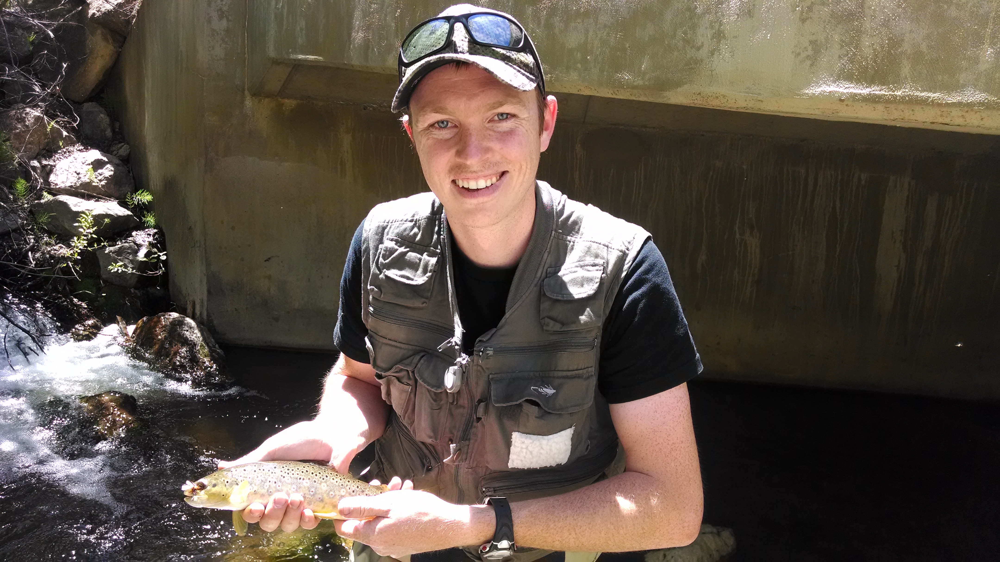
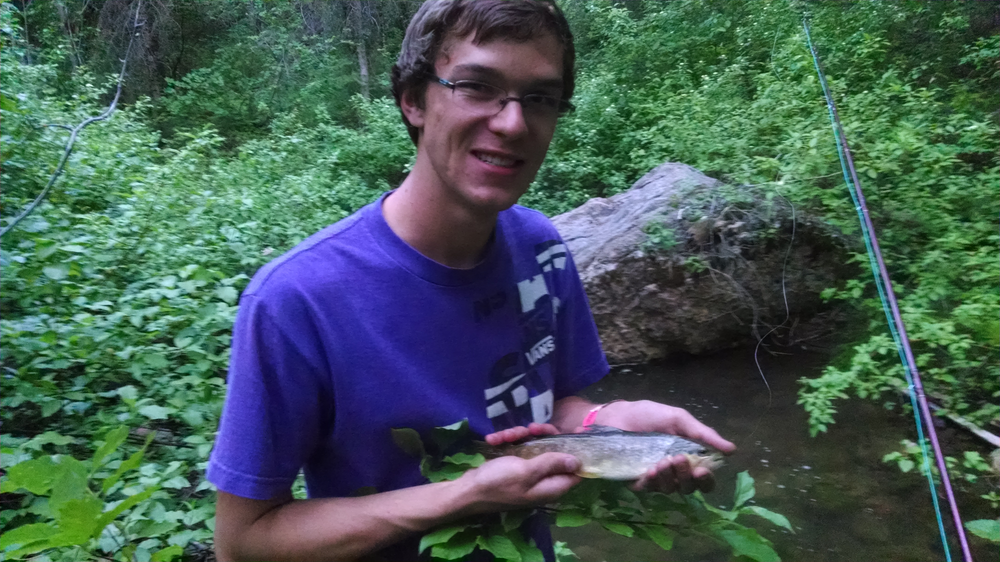
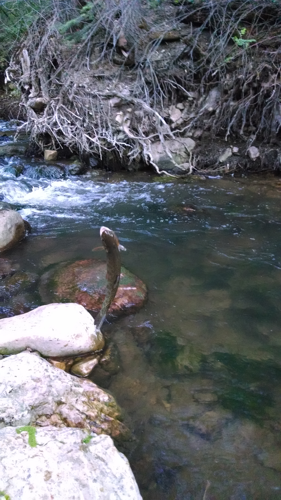
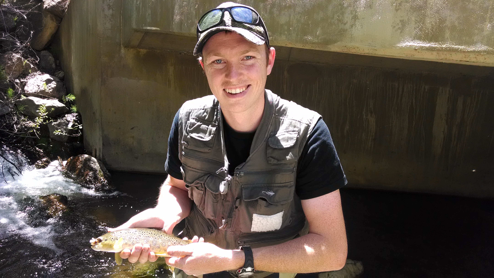
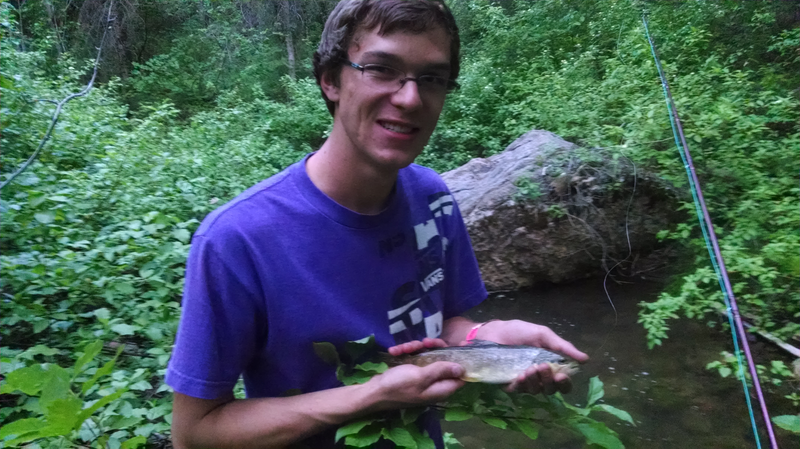
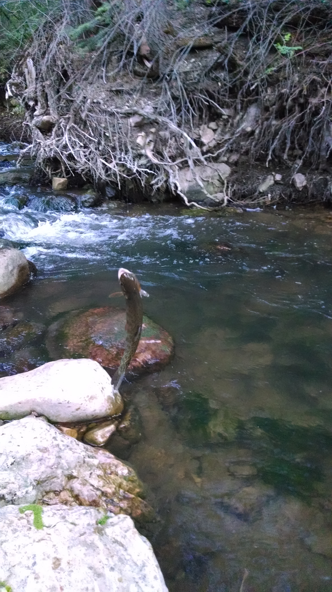

Pretty little brookie.

"Big" brown, at least for Hobble Creek.

Tyler's big brown.

One of the many beautiful cutthroat caught.

One of the many beautiful places to fish on Hobble Creek.
Hobble Creek |
|
Pretty little brookie.  "Big" brown, at least for Hobble Creek.  Tyler's big brown.  One of the many beautiful cutthroat caught.
One of the many beautiful places to fish on Hobble Creek. |